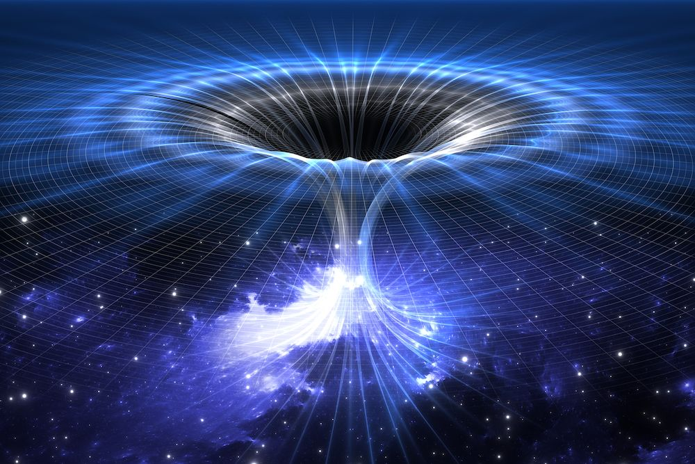
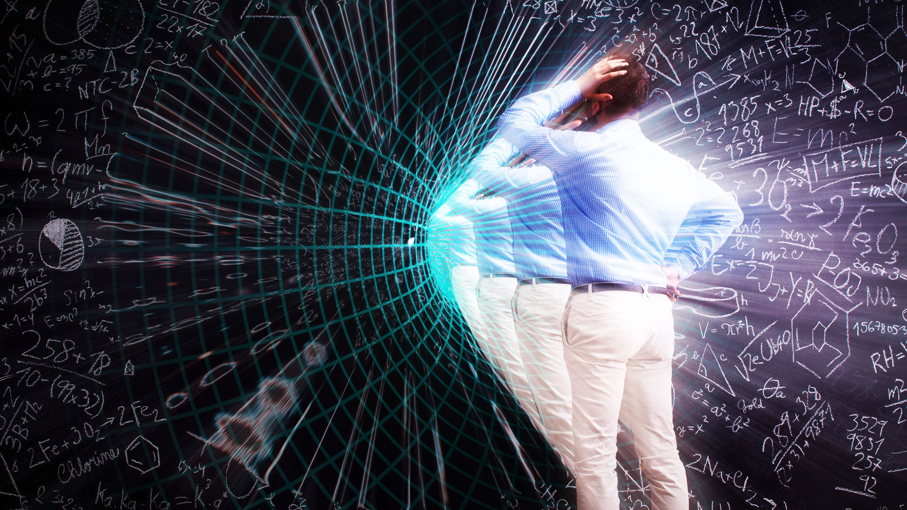
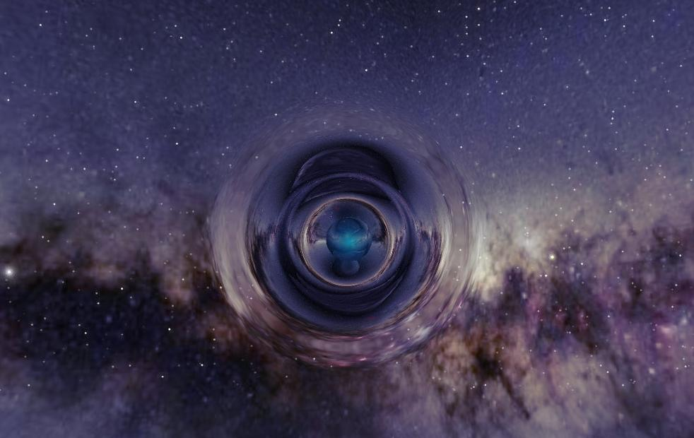
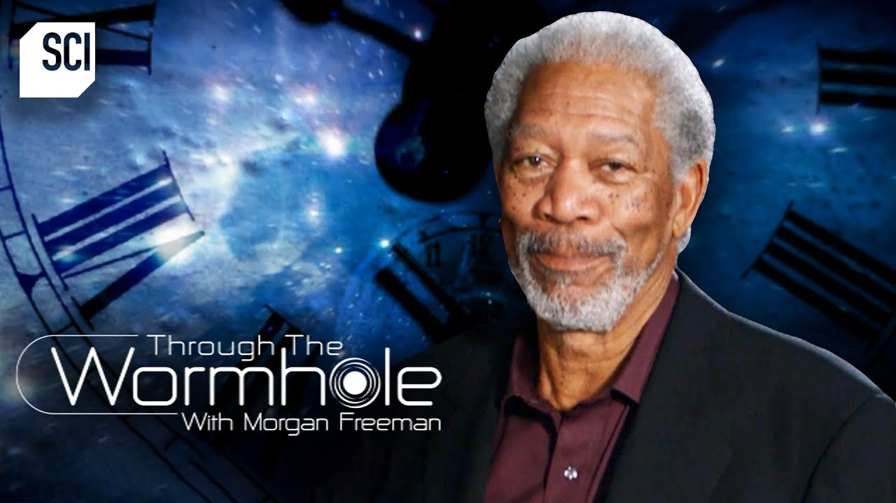

“The distinction between past, present, and future is only a stubbornly persistent illusion.”
Albert Einstein

A wormhole is like a shortcut through space — a tunnel that connects two distant parts of the universe. Imagine folding a piece of paper so two dots touch, and then poking a hole through them. Instead of traveling across the paper, you just go through the hole — that’s what a wormhole does with space! If such a tunnel existed, you could travel from one galaxy to another in seconds, even if they were millions of light-years apart.

The idea of wormholes came from Albert Einstein and Nathan Rosen in 1935.
They discovered that Einstein’s equations about gravity allowed for bridges between two parts of space-time, called Einstein-Rosen bridges.
This discovery opened the door to amazing theories about how space could bend, twist, and connect in ways we can’t see.
Some scientists even think wormholes might exist naturally, but we just haven’t found one yet.
However, keeping a wormhole open is a big challenge. Normally, the tunnel would collapse instantly because of its huge gravitational pull.
To stop that, scientists believe it would need something called exotic matter — a strange type of matter that has negative energy.
This “negative energy” could push space apart and stop the tunnel from closing.
But we haven’t discovered exotic matter yet, so wormholes remain a fascinating mystery for now.
Wormholes might not only connect two places but also two moments in time. That means traveling through one could let you visit the past or the future. According to Einstein’s theory, if one end of a wormhole moved close to a black hole or traveled near the speed of light, time would move differently there — creating a time gap between both ends. This could allow a traveler to move through time, though it also brings strange problems called paradoxes — like meeting yourself or changing history.
Wormholes and black holes are like cousins.
Both come from Einstein’s idea that gravity bends space and time.
A black hole forms when a star collapses under its own gravity, creating a deep hole that traps everything, even light.
Some scientists think that deep inside, a black hole might lead to another place — maybe even another universe.
Others say that a wormhole could connect two black holes, forming a cosmic bridge.
We can’t look inside to be sure, but these ideas help us understand how flexible and mysterious the universe truly is.
Some modern physicists believe that studying black holes might actually help us understand wormholes better.
For example, when scientists observe how black holes bend light or pull in matter, they collect clues about how space-time behaves under extreme conditions.
These experiments can tell us whether wormholes are possible or just mathematical dreams.
So even though we haven’t found one yet, exploring black holes might bring us one step closer to unlocking the truth about time travel and the deep structure of the cosmos.
While movies and books show wormholes big enough for spaceships, in real life they might be extremely small — even tinier than an atom. These are called quantum wormholes, and they could appear and disappear every second in the smallest parts of the universe. If this is true, billions might exist around us all the time, but they’re too tiny to notice. Scientists think that if we ever learn how to enlarge or stabilize one, it could completely change space travel and physics.

Wormholes have also captured the hearts of storytellers. In films like Interstellar, they allow astronauts to travel across galaxies in seconds, and in Doctor Strange, they appear as magical portals between worlds. Even though these versions are not real, they are inspired by real science. They help people imagine what might be possible if humanity ever learns to control space and time. Wormholes remind us that the universe is not just a cold, empty space — it’s full of secrets, possibilities, and mysteries still waiting to be explored.
Even though wormholes are still only theoretical, they play an important role in modern physics and imagination. Scientists use computer models and advanced mathematics to test what might happen if a wormhole formed. These studies don’t just help us dream of faster space travel — they also teach us more about how gravity, time, and quantum mechanics connect. Wormholes might turn out to be impossible, but the research itself expands our understanding of how the universe truly works.
Wormholes are one of the most mysterious and exciting ideas in astrophysics. They were first predicted by Einstein and Rosen as tunnels that could connect two parts of space-time. Scientists believe wormholes might allow super-fast travel or even time travel, but so far, they exist only in theory. The biggest challenge is that a wormhole would collapse instantly unless it was held open by exotic matter, something we’ve never found yet.

Even though wormholes remain unseen, they inspire both scientists and storytellers around the world. They remind us that the universe may be filled with hidden paths, unseen dimensions, and endless possibilities waiting to be explored. Whether they exist or not, the search for wormholes pushes humanity to keep learning, imagining, and reaching for the stars.
If one day science proves wormholes to be real, it could completely change our understanding of space, time, and travel. We might discover that the universe is more connected than we ever dreamed — a place full of shortcuts, mysteries, and new frontiers just waiting to be explored.

Morgan Freeman explains that time isn’t a universal clock ticking the same everywhere — it’s a flexible dimension woven into spacetime itself. Through Einstein’s relativity, he shows that gravity and velocity can stretch or slow time depending on your environment. Strong gravitational fields, like those near black holes, bend spacetime so heavily that time nearly freezes. Moving at extreme speeds also slows your aging compared to someone staying still. Morgan’s breakdown makes it clear: time isn’t fixed; it reacts to mass, motion, and cosmic geometry.
Morgan Freeman then pushes deeper into the philosophical and scientific puzzle behind time. He raises the question of whether time is a true physical entity or just a human-made system to track change. He discusses how the arrow of time — our sense that the future is different from the past — might emerge from entropy increasing, even though the fundamental laws of physics work the same backward or forward. Morgan explores ideas about the universe’s beginning, the nature of temporal flow, and whether extreme spacetime distortions could allow time travel. His message lands hard: time remains one of the strangest and least understood ingredients of reality.